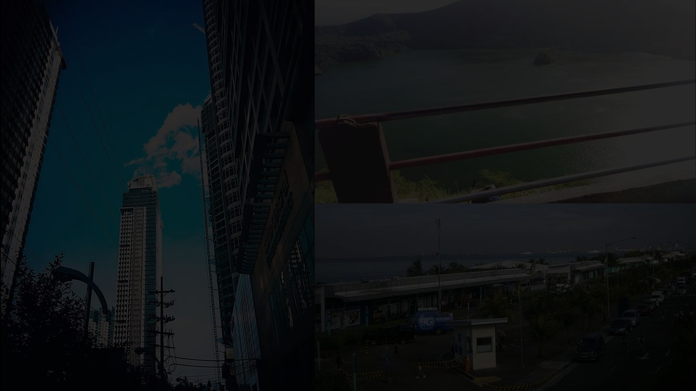
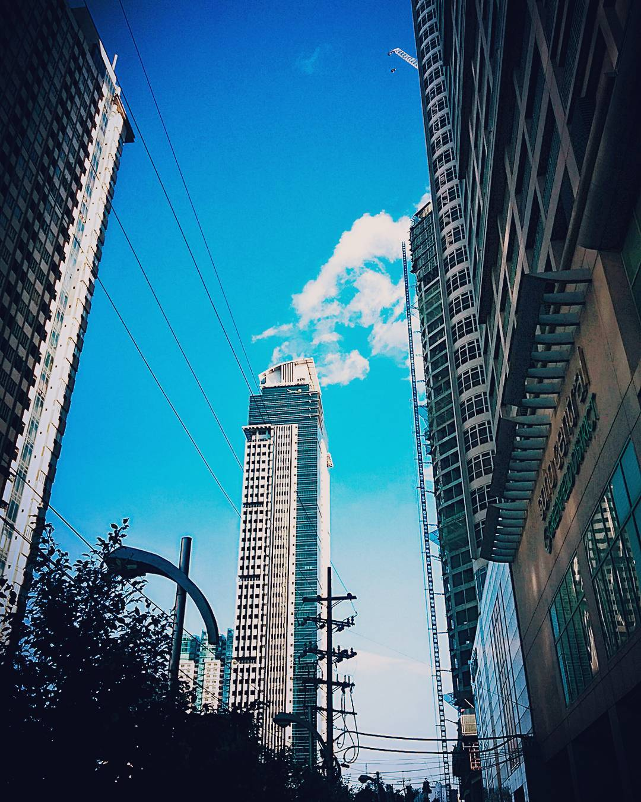
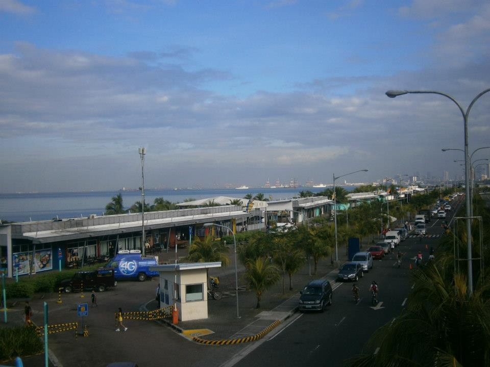
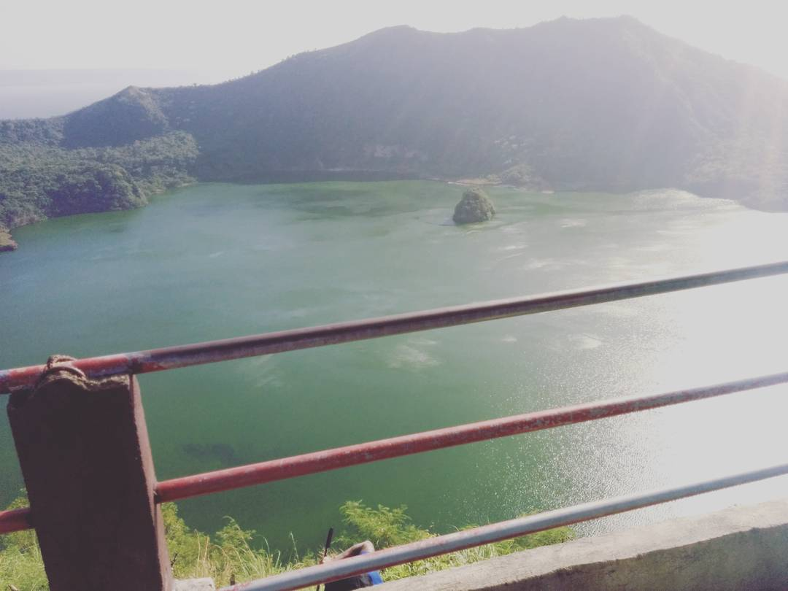

Places
in the Philippines



Makati is one of the central business districts in Metro Manila. It's known for its towering skyscrapers, huge shopping malls, vibrant nightlife, cultural landmarks and business locations in the Philippines.
While being mostly known as a business district, Makati is also home to upscale residential neighborhoods, condominiums, and luxury apartments. These cater to both tourists and locals who prefer the convenience of living close to their workplaces and the city's amenities.
Makati boasts numerous shopping centers, including Glorietta, Greenbelt, and Power Plant Mall. These malls offer a wide range of retail stores, restaurants, cinemas, and entertainment options. Greenbelt, in particular, is known for its lush greenery and luxurious atmosphere.
Overall, Makati embodies the dynamic energy of modern Philippine urban life, blending business, leisure, and culture in a bustling metropolis.
This is the location where you can find "Makati" in the Philippines

The Mall of Asia (MOA) is one of the largest shopping malls in the Philippines and in Asia, located in Pasay City, Metro Manila.
The Mall of Asia covers a vast area of approximately 407,000 square meters, making it one of the largest malls in the world. It features a sprawling layout with multiple interconnected buildings, each housing various retail stores, dining options, entertainment facilities, and other amenities.
One of the distinctive features of MOA is its proximity to Manila Bay, offering visitors panoramic views of the waterfront. The mall's seaside location also provides opportunities for outdoor activities, leisurely strolls, and dining with a view.
This beautiful landmark serves as a prominent retail, entertainment, and leisure destination in Metro Manila, attracting both local residents and tourists with its extensive offerings and diverse attractions.
Here is the place where you can find it "Mall of Asia" in philippines

Mount Taal, often simply referred to as Taal Volcano, is a unique geological feature located on the island of Luzon in the Philippines.
Taal Volcano is situated within a caldera, which is a large volcanic crater formed by the collapse of a volcano following a massive eruption. Within this caldera is a smaller crater lake known as Taal Lake, which contains another volcanic island called Volcano Island. Within Volcano Island is the main crater, which is often filled with water.
Taal is one of the most active volcanoes in the Philippines and has erupted numerous times throughout history, with recorded eruptions dating back to the 16th century. It is monitored closely by the Philippine Institute of Volcanology and Seismology (PHIVOLCS) due to its potential for eruptions that could pose risks to nearby communities.
Despite its active status, Taal Volcano and its surrounding area are popular tourist destinations. Visitors can take boat trips across Taal Lake to reach Volcano Island and hike up to the rim of the main crater. The hike offers breathtaking views of the crater lake and the surrounding landscape.
This is the place where you can find Mount "Taal on Philippines"